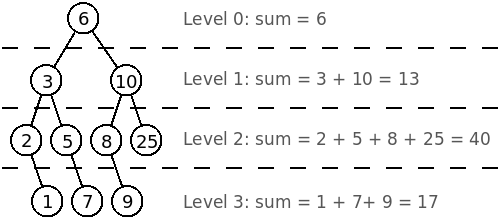

In this
problem, you should only submit a file named pi071.c containing
a line with #include "binaryTree.h" and the implementation of the
functions sumLevels and sumTLevels as described below
(a complete program is not required). Check code at the end and
explanation on how to compile.
You may assume that on Mooshak you will have access to the binary tree
implementation code (binaryTree.h and binaryTree.c) as
provided in class.
int *sumLevels(BTNode *n, int *size)
Recursive auxiliary function that returns a dynamically allocated
array where position k contains the sum of all node values at
depth k in the subtree rooted at n. Sets
*size to the number of levels. Returns NULL and sets
*size = 0 for an empty subtree. The caller is responsible for
freeing the returned array.
int *sumTLevels(BTree *t, int *size)
Wrapper function that calls sumLevels on the root of
tree t and returns the result.
The following figure illustrates a binary tree. For this tree the
returned array should be {6, 13, 40, 17}:

| Call | Result |
|---|---|
sumTLevels(6 3 2 N 1 N N 5 N 7 N N 10 8 N 9 N N 25 N N) |
{6,13,40,17} |
sumTLevels(1 2 3 4 5 6 N N N N N N N) |
{1,2,3,4,5,6} |
sumTLevels(14 4 3 N N 9 7 5 N N N N 18 16 15 N N 17 N N 20 N N) |
{14,22,48,39,5} |
To compile locally you will need the following files:
binaryTree.h and binaryTree.c — binary tree
implementation. The type NodeInfo is set to int.pi071.c — your code with the required functions.test071.c — file with the main() function handling
input reading and output printing.To compile, run in the folder where the files are located:
gcc test071.c binaryTree.c pi071.c, which will generate an
executable a.out.
Test code, file: test071.c
// PI071 Testing
#include <stdio.h>
#include <stdlib.h>
#include "binaryTree.h"
int main(void) {
int n;
scanf("%d", &n);
for (int i = 0; i < n; i++) {
BTree t;
readTree(&t);
int size = 0;
int *sums = sumTLevels(&t, &size);
printf("sumLevels(t) = {");
for (int j = 0; j < size; j++) {
if (j > 0) printf(",");
printf("%d", sums[j]);
}
printf("}\n");
free(sums);
freeTree(t.root);
}
return 0;
}
Neste problema
deverá apenas submeter um ficheiro pi071.c contendo uma linha
com #include "binaryTree.h" e a implementação das funções
sumLevels e sumTLevels como a seguir descrito (não é
necessário um programa completo). Veja o código no final, bem como como
compilar.
Pode assumir que terá acesso no Mooshak ao código de implementação da
árvore binária (binaryTree.h e binaryTree.c) como
fornecido nas aulas.
int *sumLevels(BTNode *n, int *size)
Função auxiliar recursiva que devolve um array dinamicamente
alocado onde a posição k contém a soma dos valores de todos
os nós à profundidade k na subárvore com raiz em n.
Define *size com o número de níveis. Devolve NULL e
define *size = 0 para uma subárvore vazia. O chamador é
responsável por libertar o array devolvido.
int *sumTLevels(BTree *t, int *size)
Função wrapper que chama sumLevels na raiz da árvore
t e devolve o resultado.
A figura seguinte ilustra uma árvore binária. Para esta árvore o
array devolvido deve ser {6, 13, 40, 17}:
| Chamada | Resultado |
|---|---|
sumTLevels(6 3 2 N 1 N N 5 N 7 N N 10 8 N 9 N N 25 N N) |
{6,13,40,17} |
sumTLevels(1 2 3 4 5 6 N N N N N N N) |
{1,2,3,4,5,6} |
sumTLevels(14 4 3 N N 9 7 5 N N N N 18 16 15 N N 17 N N 20 N N) |
{14,22,48,39,5} |
Para compilar localmente vai precisar de ter os seguintes ficheiros:
binaryTree.h e binaryTree.c — implementação da
árvore binária. O tipo NodeInfo está configurado para
int.pi071.c — o seu código com as funções pedidas.test071.c — ficheiro com a função main() que trata
da leitura e escrita.Para compilar execute na pasta onde estão os ficheiros:
gcc test071.c binaryTree.c pi071.c, que vai gerar um executável
a.out.
Código para testes, ficheiro: test071.c
// PI071 Testes
#include <stdio.h>
#include <stdlib.h>
#include "binaryTree.h"
int main(void) {
int n;
scanf("%d", &n);
for (int i = 0; i < n; i++) {
BTree t;
readTree(&t);
int size = 0;
int *sums = sumTLevels(&t, &size);
printf("sumLevels(t) = {");
for (int j = 0; j < size; j++) {
if (j > 0) printf(",");
printf("%d", sums[j]);
}
printf("}\n");
free(sums);
freeTree(t.root);
}
return 0;
}
Algoritmos e Estruturas de Dados — Exercícios de Programação
DCC/FCUP - Faculdade de Ciências da Universidade do Porto